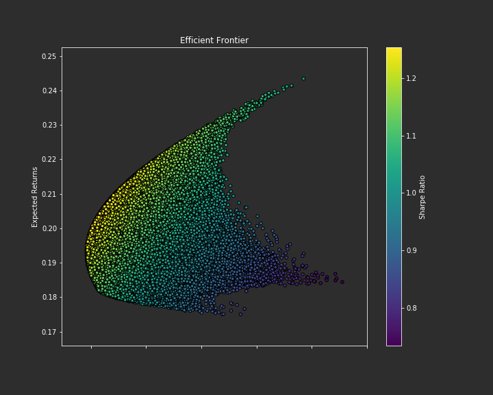

Portfio Optimization using Monte Carlo
In my earlier post, I demonstrated a method of portfolio optimization using the principles of Markowitz and Sharpe to select a risk balanced portfolio. Suppose instead I have a portfolio consisting of the following assets:
| Ticker | Name | Industry |
|---|---|---|
| ADI | Analog Devices, Inc. | Information Technology |
| COO | The Cooper Companies | Health Care |
| GOOG | Alphabet Inc Class C | Communication Services |
| AON | Aon plc | Financials |
| ADS | Alliance Data Systems | Information Technology |
How would I weight each asset that yields an optimal (risk balanced) portfolio ? One way to approach this is to create a Monte Carlo experiment. A monte carlo experiment relies on repeated random samples to build a probability distribution of results. The setup of the experiment is simple: I create a sample portfolio assigning random weights to each asset and calculate the portfolio’s Sharpe Ratio and Volatility. I repeat this for N trials until I find a portfolio with the maximum sharpe ratio and minimum volatility.
Gather the Data
I’ll use Quandl to extract all closing prices for each asset for the past 10 years then calculate the annual returns and covariance matrix.
annual_Trading_Days = 253
logger.info('retrieving data')
quandl.ApiConfig.api_key = '###API_KEY###'
tickers = ['ADI','COO','GOOG','AON','ADS']
data = quandl.get_table('WIKI/PRICES', qopts = { 'columns': ['ticker', 'date', 'adj_close'] }, ticker = tickers, date = { 'gte': '2016-01-01', 'lte': '2016-12-31' })
daily_returns = df.pct_change()
p = daily_returns.mean()* annual_Trading_Days
C = daily_returns.cov() * annual_Trading_Days
where:
p = Annual Returns
C = Covariance Matrix of Annual Returns
Simulate Portfolios
Next, I will need to generate random portfolios with random weights standardized between 0 and 1 then calculate the resulting returns, volatility and sharpe ratio. We can do this in python using the following calculations
w = np.random.random(n_assets)
R = np.dot(w,p)
sigma = np.sqrt(np.dot(w.T, np.dot(C,w)))
sharpe_ratio = R/sigma
where:
w = weights
R = Returns
sigma = volatility
Interpreting the Results
After running through all trials, the distribution of portfolios are plotted against the rate of return vs risk (volatility). The outter most curve of the plot is known as the efficient frontier. Portfolios that lie on this curve represent the optimal mix of investments given a certain degree of risk (volatility).

Next, I extract the portfolio with the highest sharpe ratio and the portfolio with the lowest volatility and each assest’s respective weight:
╒════════╤═══════════╤══════════════╤════════════════╤══════════════╤══════════════╤═══════════════╤══════════════╤══════════════╕
│ │ Returns │ Volatility │ Sharpe Ratio │ ADI Weight │ COO Weight │ GOOG Weight │ AON Weight │ ADS Weight │
╞════════╪═══════════╪══════════════╪════════════════╪══════════════╪══════════════╪═══════════════╪══════════════╪══════════════╡
│ Max-SR │ 0.204138 │ 0.16286 │ 1.25346 │ 0.0275818 │ 0.0598687 │ 0.391519 │ 0.317509 │ 0.203521 │
╞════════╪═══════════╧══════════════╪════════════════╪══════════════╪══════════════╪═══════════════╪══════════════╪══════════════╡
│Min-Var │ 0.192924 │ 0.158425 │ 1.21776 │ 0.0510847 │ 0.0939317 │ 0.441359 │ 0.153472 │ 0.260153 │
╘════════╧═══════════╧══════════════╧════════════════╧══════════════╧══════════════╧═══════════════╧══════════════╧══════════════╛
Performance at Scale
It took me around 5 minutes to run 1 million trials on a i5 processor netbook. At this rate, experiments at scale are not possible. There are several options including CPython, multiprocessing and multithreading. The most straightforward option is multithreading as it requires the least amount of refactoring to the existing code and works best with my limited amount of RAM. Using a the popular library joblib we can leverage parallelization so that calculations are performed in batches. The code that manages the simulations is rewritten so that its passed as an iterable to joblib. This parallel implementation completed in under 2 minutes.
from joblib import Parallel, delayed
n_portfolios = 1000000
def generate_portfolio(p,C,n_assets):
w = np.random.random(n_assets)
R = np.dot(w,p)
sigma = np.sqrt(np.dot(w.T, np.dot(C,w)))
sharpe_ratio = R/sigma
assemble_portfolio(w,R,sigma,sharpe_ratio)
Parallel(n_jobs=4, backend='loky', verbose=2)(delayed(simulate_portfolio)(p,C,n_assets) for portfolio in range(n_portfolios))